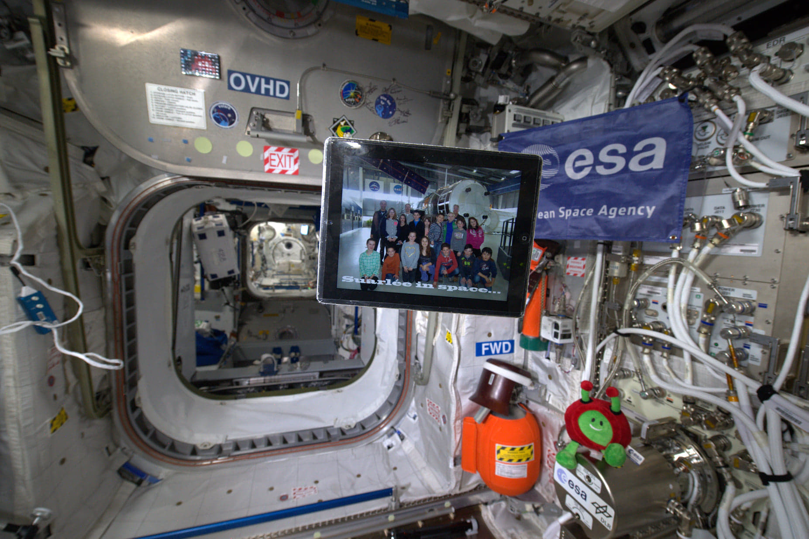

Aerospace / Essai
Mon parcours dans l’aérospatial
Ébauche — notes personnelles. Ce texte rassemble mes souvenirs, mes contributions et mes premières pistes de réflexion pour Aerospacelab. Il constitue un point de départ, encore à structurer et à approfondir.
Mon intérêt pour l’aérospatial remonte à l’enfance : les livres sur l’espace, les séjours à l’Eurospace Center et la découverte de l’entraînement des astronautes européens. Il s’est prolongé dans mes contributions à Wikipédia sur Starship, Starlink et Starshield, puis dans mes réflexions autour d’Aerospacelab. Ce qui relie ces expériences, c’est l’envie de comprendre les systèmes spatiaux, leurs usages et les choix qui les rendent possibles.
#motivation-letter #aerospacelab
Années 2010
Quand j’étais petit j’ai lu des lvires sur énormément de sujets, j’ai mémorisé l’Atlas du monde à 6 ans, j’avais un livre où les animaux étaint organisés par phylogénétique qui a baucoup inflencé ma pensée, j’avais énormément d elivrs sur les dinosaures et j’avais des lvires sur l’espace : aérospatial et exploration spatial.
En 2015, pour notre venue à l’Eurospace Center, notre professeur Christophe Modave, Ami de Frank De Winne, a réussi à faire parvenir notre photo de l’Eurospace Center jusque dans l’ISS. La photo a été prise en 2015 par la Spationaute Italienne Amanda Cristoforetti. Le deuxième garçon en pull orange en partant d’en bas à gauche, c’est moi ! :) Je me souviens qu’on me faisait asseoir en bas des photos car j’étais plus petit que les autres enfants de mon âge. Nous sommes allés deux années de suit à l’Eurospace Center, l’année d’après nous avons même dormi sur place.

Mr Christophe Modave nous avait également fait rentré dans le Centre d’Entraînement des Astronautes Européens dans la base miltaire allouée à l’ESA à Cologne où nous avions vu la piscine où pouvait s’entrainer les astronautes. Une des deux seules fois de ma vie où je suis allé en Allemagne. Nous avons eu le privilège d’avoir comme guide de visite nulle autre que Frank DeWinne lui-même. D’ailleurs Frank DeWinne est passé à l’école 1 année où j’étais là, et nous sommes passés dans le programme Les Niouzz de la RBTF en 2016 pour notre interview de Frank DeWinne et les expériences réalisées en class à l’occasion.
Bref, M. Christophe Modave m’a fort dicté ma passion sur l’espace a fortiori et je l’ai déjà remercié sur Facebook pour ces opportunités inexplicablement rares.
Nous avons fait décoller des fusées au bicarbonate de soude. Mon ami a toujours la fusée chez lui d’ailleurs. Je me souviens que la nourriture allemande y était assez mauvaise (pomme de terre froides à la mayonnaise)
En Secondaire je n’ai pas eu autant d’implciations sur l’espace à l’école à l’exception de deux anecdotes. Quand nous sommes allés dans le Nord de la France, j’ai été attentif et ait acheté une maquette de V2 allemand. Lors d’un cours de technologie pratique, nous devions moi et mon partenaire de groupe fabriquer un sous-marin, mais nous avions mal compris l’ordre des projet sà faire sur l’année (c’était le sous-marin d’abord puis la fusée en fin d’année) et nous avions apporté le matériel pour faire une fusée. Eh bien sur le même cours on a quand-même réussi à improviser un sous-marin ; en réutilisant le corps (2 bouteilles en plastique qu’on a découpé pour faire différentes chambres), en utilsiant des paquets de mouchoirs en plastiques rempli de caillou du parking de l’école pour les cailloux, en empruntant la pompe d’un autre et en utilisant de la colle étanche. Je suis arrivé avec les pièces pour faire une fusée et je suis reparti avec un sous-marin.
Implication sur le Wikipédia spatial dans les années 2020s
En 2023, j’ai créé la page sur le deuixème lancemnt du Starship sur le Wikipédia en anglais qui s’appelait à sa création SpaceX Starship Integrated Flight Test 2, maintenant Starship flight test 2. J’ai aussi revamp la page sur le Starship en me concentrant sur les coûts de celui-ci. J’ai revamp la page sur la “Starbase”, surtout la gestion des risques environnementaux De 2023 à 2024, j’ai revamp le petit article Wikipédia “Starlink services in Ukraine” en l’article massif “Starlink in the Russo-Ukrainian War”. Cette article est le plus compliqué que j’ai construit, il utilise 150 sources. Il démarre de l’xistnce Starlink avant l’invasion en Ukraine. Il détaille les usages civils, militaires par l’Ukraine, comment SpaceX
Je me suis senti obligé de fournir un tel effort sur cette articles, ce qui m’a pris une trentaine de soirées, car la désinformation sur Reddit lié à l’événement était très élévée. Je voyais que des gens de différnts côtés de la situation ; américains, ukrainiens, russes, europééens tentaint à chaque fois de défendre des point de vues différents mais n’arrivaient pas à s’accorder sur la vérité des événeemnts car elle était éparpillée dans des centaines de sources. En construisant l’article, j’ai reconstruit une timeline de la vérité des événements sur la Guerre en Ukraine.
Sur la même période, j’ai créé l’article SpaceX Starshield avant qu’il soit connu du grand public quand il n’était qu’un jeune projet discret de SpaceX. En Europe son équivalent c’est IRIS2, pour lequel Aerospacelab a un contrat. L’article SpaceX Starshiled a été régulièrement reposté sur Twitter, Reddit etc car le concept ext extrêment important aux États-Unis - et il est encore reposté aujourd’hui et le sera encore à l’avenir car Starshield acquiert de plus en plus d’importance.
En Avril 2023, lorsque Vincent de la Chaine Stardust avait développé un argumantaire contre le Starship, j’ai analysé sa critique :
[Critique constructive] De façon générale je dirais que la vidéo couvre les différentes critiques que l’on peut faire autour du développement du Starship, les côtés moins éthiques, l’impact environnemental négatif, les exagérations/motivations questionables d’Elon Musk et certains risques techniques. Je suis d’accord avec toi, ces critiques ont le mérite d’être faites. Mais j’ai quand-même quelques problèmes avec tes arguments concernant les aspects techniques.
Je trouve que tu passes une trop grande partie de la vidéo sur la colonisation martienne et le Starship point-to-point, qui sont des buts lointains de l’entreprise mais qui n’ont rien de concret dans l’actuel. Tu le notes toi-même vers 41 minutes. De façon général je ne comprends pas pourquoi les critiques du Starship (C S Skeptic, Thunderfoot) s’attardent autant sur les parties les moins intéressantes du programme, celles qui n’ont aucune base dans le présent de l’entreprise. Je trouve que tu prends les déclarations du CEO trop à la lettre et ne considère pas les conséquences certes moindre mais réalistes que le Starship pourrait avoir sur le secteur aérospatial en général. Dans la seule partie de la vidéo qui offre des arguments concernant l’avenir du Starship dans un futur proche, j’aimerais relever certains de tes arguments.
35:29 “Après les accidents de Challenger et Columbia, la nécessité d’avoir des secours est devenue essentielle, notamment à la NASA. C’est pourquoi, en dehors de la Navette Spatiale, aucun astronaute NASA n’a volé sur un vaisseau non-muni d’un système de secours au décollage et d’une redondance de parachute. […] Sur le Starship […], aucun système de secours au décollage n’est prévu”. Il me semble que Techniques Spatiales l’avait déjà fait remarqué, mais il est possible pour le Starship d’atteindre un taux de fiabilité raisonnable pour le vol habité et ce sans système de secours. En fait, c’est même de cette manière que le Starship devra prouver sa fiabilité, par un très, très grand nombre de vol. D’où l’intérêt d’être réutilisable et de pouvoir être relancé très vite. Le risque actuel de perte d’équipage acceptable à la NASA est de 1 sur 270 pour qu’un vaisseau puisse être considéré comme “human-rated”. Il est de 1/270 sur la Crew Dragon. Si le Starship effectue bien au-delà de 270 vols d’affilé sans échec, alors il pourra être considéré comme satisfaisant pour le vol habité. Ces nombreux vols serviraient à agrandir la constellation Starlink. Je ne comprends de toute façon pas pourquoi tu parles de la NASA dans le cadre de cet argument puisque dans le programme HLS et les mission Artemis , les astronautes décollent en SLS/Orion et font le trajet aller/retour en Starship jusqu’à la Lune et reviennent se poser sur Terre avec Orion. À aucun moment les astronautes ne décollent ou n’atterrissent sur Terre en Starship. À ma connaissance, la NASA n’a aucune mission habitée de prévue avec le Starship qui nécessiterait un décollage/atterrissage avec des astronautes.
37:08 ‘’En matière de sécurité, le Starship en version habité serait donc l’engin spatial le plus dangereux jamais conçu’’ Si tu juges cette variable purement par l’absence de système de secours, oui. 37:15 ‘’Et évidemment, la NASA ou toute autre agence spatiale refusera catégoriquement d’utiliser le Starship tel qu’il est conçu pour faire voler ses astronautes, aussi fiable qu’il puisse paraitre’’ Le fait que le Starship soit le seul vaisseau choisi pour Artemis III contredit directement cette affirmation. Je suis curieux de savoir aussi où t’as été lire que ‘’évidemment toute agence spatiale refusera catégoriquement d’utiliser le Starship tel qu’il est conçu pour faire voler ses astronautes’’. T’as une source pour ça ? Il n’existe à ma connaissance aucun rapport ou une étude qui concerne les vols Starship post-Artemis et encore moins les vols Starship impliquant d’autres agences spatiales.
37:25 ‘’Soyons clair, cette technologie n’existe tout simplement pas actuellement. Ravitailler en orbite implique des mouvements de fluide très complexe […] Le problème n’est absolument pas l’amarrage […] mais le transfert de fluide’’ Rien n’empêche fondamentalement la faisabilité du ravitaillement orbital, mais SpaceX seraient les premiers à le faire. Le concept de dépôt orbital pour le ravitaillement existe cependant depuis longtemps et avait déjà été proposé au sein du programme de la Navette spatiale dans les années 60 mais également par l’Air Force et ULA en 2009. À la limite cet argument m’intéresse. En quoi le transfert de fluide serait possible sur Terre mais impossible en orbite ? Pour quels raisons ? Et admettons que cette technologie soit impossible, pourquoi alors la NASA a-t-elle versé $53.2 million à SpaceX en 2020 [1] pour faire une démonstration de cette technologie ? Dans les sphères anti-SpaceX, la prétendue impossibilité du dépôt orbital et du ravitaillement en orbite est une critique récurrente du Starship depuis des années, mais quand on creuse derrière c’est que des suppositions.
38:24 ‘’il est totalement faux de dire qu’une fusée totalement réutilisable est meilleur écologiquement qu’une fusée classique. Surtout dans le cas du Starship. Pour que le Starship soit rentable, il doit voler plus, beaucoup plus. ’’ Je ne comprends pas trop où tu vas avec cet argument. Admettons qu’on ait :
- Plusieurs fusées non-réutilisables qui volent une fois chacune
- Une fusée réutilisable qui vole plusieurs fois La deuxième fusée aura un impact écologique supérieur sur le long terme puisque qu’elle vole plusieurs fois. Mais tu ne peux pas la comparer à une fusée qui vole une seule fois, pour la même quantité de travail accomplit tu dois la comparer à l’ensemble des fusées qui ont volé une fois. Pourquoi alors une fusée qui vole plusieurs fois aurait un plus grand impact écologique que plusieurs fusées qui volent une seule fois ? Est-ce que ce ne serait pas plutôt l’inverse ? Chaque fusée qui ne vole qu’une seule fois nécessite de rassembler/miner tous les matériaux nécessaires à la construction d’une nouvel fusée pour chaque lancement. Tu comprends pourquoi je ne comprends pas le sens de ton argument ? D’autant plus que le Starship brûle du méthane et de l’oxygène. Le méthane en lui même endommage 20 fois plus la couche d’ozone que le CO2, mais brûlé, ne rejette que de l’eau et du dioxyde de carbone. Le méthane est un hydrocarbone très simple quand tu le compares au kerosen avec lequel fonctionne d’autres fusées par exemple. L’impact des rejets du Starship sur l’atmosphère serait minimal.
38:49 ‘’La question n’est pas et n’a jamais été dans le spatial de lancer plein de trucs en permanence. Cet argument de lancement cadencé à l’extrême n’est pas adapté à la réalité du marché et des besoins. Que lancerait-on toutes les demie-heures […] Pourquoi aurions-nous besoin de lancer 1 million de tonnes en orbite terrestre chaque année ? ’’ « Toutes les demie-heures » est poussé à l’extrême, mais admettons un lancement par jour (par comparaison, SpaceX lance en moyenne tous les 4 jours actuellement. Avant l’arrivée de SpaceX, aucune entreprise ne lançait plus de quelques fois par an). Tu pars du principe que le prix plus bas et l’offre plus large du Starship (larges charges utiles vers la Lune par exemple) ne générera pas de demande supplémentaire. En 2023 il est impossible pour moi, toi ou quiconque d’autre de prédire la demande induite ou non par l’existence du Starship.
39:34 Je suis d’accord avec toi, la Saturn V et le Starship sont incomparables. Pas les mêmes époques ni objectifs.
41:53 “Nous n’avons d’ailleurs pas de nouvelle du HLS depuis sa sélection, au point que la NASA est en train de sélectionner un second atterrisseur”. Ta formulation de phrase sous-entend que la NASA sélectionne un second atterrisseur car elle n’a pas de nouvelle du HLS. À ma connaissance cette affirmation n’est pas fondée ou sourçable, à part si t’as une source à proposer ? La NASA a au contraire sorti deux rapports il y a quelques mois où elle consolide son choix du HLS comme premier atterrisseur : [2][3]
Et j’avais une dernière question. Dans l’hypothèse où le Starship HLS effectuerait son atterrissage lunaire dans ce qui sera probablement les années 2030 compte tenu des retards que prendrait certainement le développement d’un Starship habitable, retransmettrais-tu en direct l’alunissage Artemis III sur YouTube ou ne couvrirais-tu que le décollage jusqu’au rendez-vous HLS-Orion ? La dernière fois que j’avais évoqué le dilemme, certes sarcastiquement, tu avais bloqué mon compte Twitter, stérilisant toute possibilité au débat.
Merci pour tes vidéos que j’apprécie encore revisionner. J’espère ne pas être le seul commentaire à la fois mitigé et constructif sous cette vidéo. Je suis d’accord avec toi, répondre à tes critiques d’Elon et du Starship par “aigri” ne sert vraiment à rien.
SOURCES - Pour accéder à une source, collez le lien dans google et cliquez sur le premier lien proposé. Les commentaires contenant des liens sont considérés comme des spams par YouTube, c’est pour ça que j’ai remplacé les ”/” et ”.” du lien par des espaces.
[1] nasa gov directorates spacetech solicitations tipping_points 2020_selections [2] nasa gov content about-human-landing-systems-development [3] hls_30_day_report_final_041922.pdf
Mon Analyse d’Aerospacelab
Une partie de mon analyse va se reposer sur les infos sur Intenet ainsi que les infos que j’ai récolté en réponse aux questions que j’ai pu posé lors de mon entretien de 20-30 minutes avec Aerospacelab au JobDay à l’Henallux le 6 octobre. Le CV que je vous ai passé ce jour-là est mon CV générique en tant qu’Intégrateur agentique. Il est très bien en lui-même mais il cache toute l’expérience vis-à-vis de l’aérospatial que j’ai accumulé au cours de mon existence.
De base je me disais que je n’allais pas tenté d’entrer en stage chez Aerospacelab mais ce qui m’a motivé c’est que mon ami Théo Martin - 2ème en partant de la droite en partant de l’ISS- a été accepté pour un stage au CERN (!!!). Également, je n’aime pas du tout le public en Wallonie/sur Namur je trouve ça moribond et ennuyeux et je sais que je veux être dans une startup ou scale-up uniquement.
Structure de l’entreprise
Stratégies pour Aerospacelab
Remplacement de Starlink en Ukraine et pour la défense Européenne en général
Peut-être que je suis biasé par ma connaissance de Starlink dans la Guerr Russo-Ukrainienne, mais je pense qu’il y a un créneau pour Aerospacelab à se positionner comme provider n°1 pour remplacer Starlink sur le terrain en Ukraine. J’ai vu plusieurs américains dire qu’ils seraient très contnt si les Européns pouvaient être indépendant de Starlink en Ukraine.
Servers sur Orbite
Un satellite est un mini-ordinateur
Intégration verticale
Robotique industrielle
Lanceur Aerospacelab
Le bottlenck principal de l’Europe c’est Ariane. En Chine il y a une entreprise qui s’appelle Space Epoch et fabricatur de moteur qui s’appelle Jiuzhou Yunjian et développe une fusée similaire au Starship au format réduit, avec un moteur methane-LOX similair au Raptor, des réservoirs en inox et le tout dans un design itératif. Imagions un instant que la Belgique fasse un partenariat avec l’Espagne et lance un mini-Starship depuis les Canaries sur un orbite à 30°-40°, le bottleneck d’Aerospacelab serait retiré. Beaucoup vous dirons que c’est impossible, mais rien n’est fondamentalement impossibe surtout aujourd’hui avec la puissance de l’IA + intégration verticale + nécessités réelles de l’Europe.
Intégration agentique
Mon utilité en Wallonie
Je pense qu’avec mon éducatione t mon environnement de formation je suis difficilement plus utile en Wallonie qu’au sein d’Aerospacelab si vous me laisser l’occasion d’intégrer Aerospacelab.
Demande de Rendez-vous
J’aimerais me rendre sur place et prendre un second rendz-ous avec Aerospacelab. Quand cela est possible ?